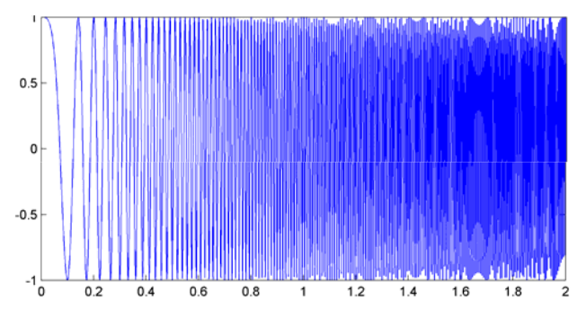
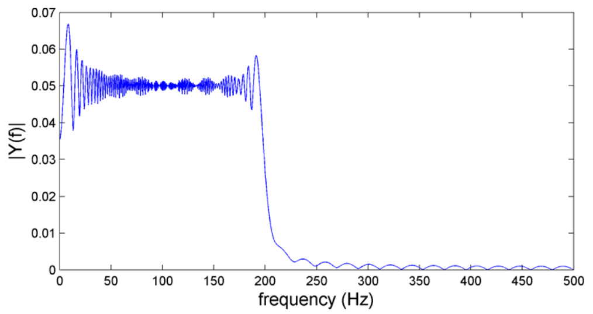
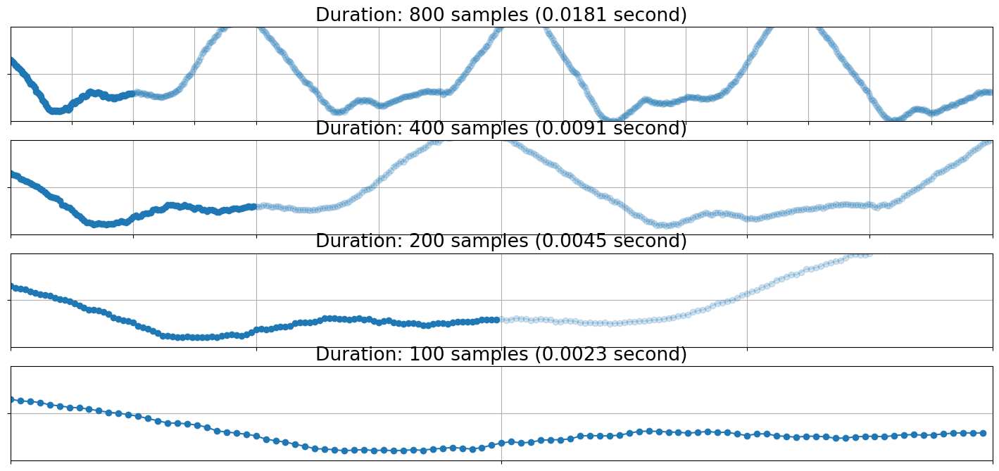
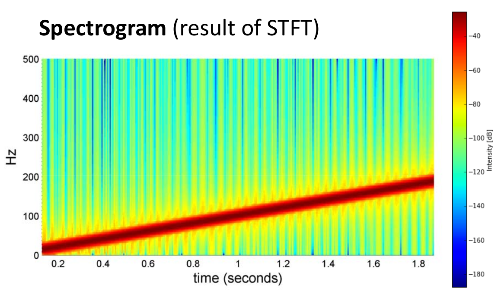
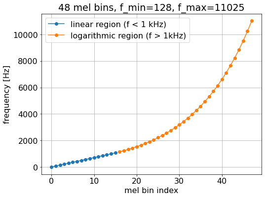
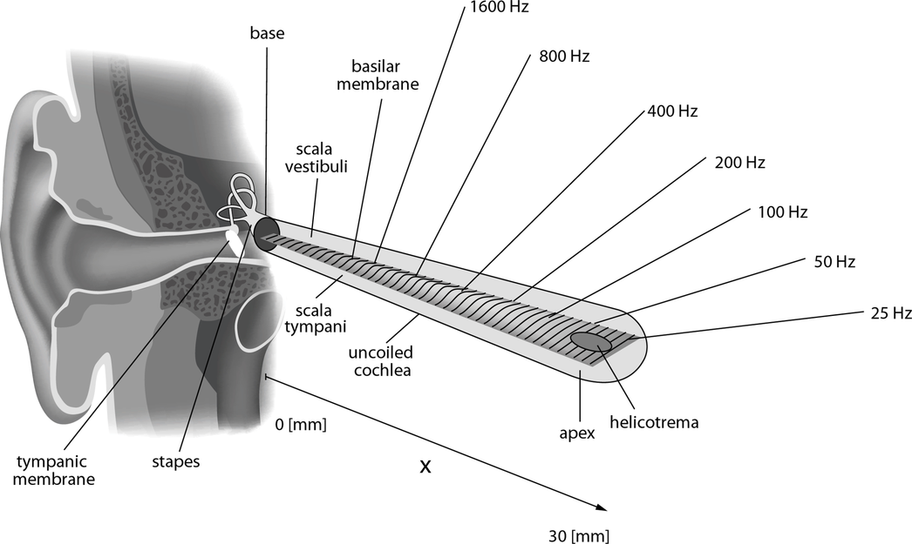

Lesson 1: Turning Sound into Numbers (Waveforms, Spectra, and Spectrograms)
If you've worked with modern Generative AI, you're already used to thinking about data as structured matrices:
- Text is a sequence of discrete token IDs mapped to learned vector embeddings.
- Vision is a regular spatial grid of pixels with color channels (\(3 \times H \times W\)).
Sound feels completely different. At its physical core, sound is continuous mechanical vibration—air molecules colliding and oscillating. Before a neural network can compose a symphony, synthesize human speech, or separate vocal stems, we have to turn that continuous wave into a tensor.
This lesson builds audio representations from first principles: from the physics of vibrating air, to digital sampling, to the mathematical lens of the Fourier Transform.
- 1. Sound as Waveforms & Spectrograms (You are here)
- 2. Recipes vs. Records: Symbolic MIDI vs. Raw Audio
- 3. Audio Tokens & Neural Codecs (EnCodec, DAC, SoundStream)
- 4. Conditioning Mechanisms: Steering Audio Models
- 5. Modern Architectures (AudioCraft, Diffusion Models) & Evaluation
1. What a Sound Wave Actually Is
When a speaker cone pushes forward, it compresses the air molecules in front of it. When it pulls back, it creates a pocket of low pressure. These alternating bands of high and low pressure propagate through the air and push against your eardrum.
A microphone reverses this mechanical action: vibrating air moves a diaphragm, converting physical displacement into continuous voltage. If you record that voltage over time, you get a waveform.
The simplest building block of any acoustic signal is a pure sinusoidal wave:
Every point on this wave is governed by three primary variables:
- Amplitude (\(A\)): How far the wave deviates from ambient air pressure. In the physical world, amplitude drives perceived loudness; in digital audio tensors, it is normalized to the range \([-1.0, +1.0]\).
- Frequency (\(f\)): The number of full compression-rarefaction cycles completed each second, measured in Hertz (Hz). We perceive frequency as musical pitch.
- Period (\(T\)): The duration of one complete cycle in seconds. Because frequency is cycles per second, period is its direct inverse:
\[ T = \frac{1}{f} \]
- Phase (\(\phi\)): The offset of the cycle at time \(t = 0\). While our ears are mostly insensitive to the absolute phase of an isolated sine wave, phase becomes critical when multiple waves interact—waves in phase reinforce each other, while waves out of phase cancel out.


Concrete Intuition: Halving Frequency Doubles Wavelength
Consider the musical standard tuning pitch, Concert A (A4), which vibrates at \(440\text{ Hz}\):
- Period: \(T = \frac{1}{440} \approx 0.00227\text{ s} = \mathbf{2.27\text{ ms}}\) per cycle.
- Drop down one octave to A3 (\(220\text{ Hz}\)): \(T = \frac{1}{220} \approx \mathbf{4.55\text{ ms}}\) per cycle.
Halving the frequency doubles the time required to complete a single oscillation. If you look at a \(10\text{ ms}\) snapshot of audio, you will capture roughly 4.4 full cycles of 440 Hz, but only 2.2 cycles of 220 Hz.
Drag frequency and amplitude. Play to hear how period and loudness change.
2. Timbre: Why Real Instruments Aren't Pure Sines
If you play Middle C (\(261.63\text{ Hz}\)) on a grand piano and on a flute at the exact same loudness, you can instantly tell them apart.
A pure sine wave sounds sterile, like a generic calibration beep. Physical instruments resonate at multiple frequencies simultaneously. They produce a baseline fundamental frequency (\(f_0\)) along with a series of integer-multiple frequencies called harmonics (or overtones): \(2f_0, 3f_0, 4f_0, \dots\)
The distinct distribution of energy across these harmonic coefficients (\(A_1, A_2, A_3, \dots\)) determines the sound's timbre (tone color):
- Flutes produce almost all their energy at the fundamental \(A_1\), with very weak harmonics (nearly a pure sine).
- Clarinets produce primarily odd harmonics (\(f_0, 3f_0, 5f_0\)), creating a hollow, reedy tone.
- Bowed Violins and Sawtooth Synths contain rich energy across every integer harmonic (\(1, 2, 3, 4, 5\dots\)), giving them a bright, buzzing presence.

Mix harmonics of \(f_0 = 220\text{ Hz}\). Try the presets for flute-like vs sawtooth-like timbre.
3. From Analogue Reality to Digital Tensors: Sampling & Quantization
To store continuous air pressure in computer memory, we must convert an infinite stream of continuous values into a discrete array of numbers. This involves two distinct steps:
- Sampling (Discretizing Time): We measure the wave's instantaneous amplitude at regular time steps \(\Delta t = \frac{1}{f_s}\). The rate of measurement \(f_s\) is the sample rate (in Hz or samples/second).
- Quantization (Discretizing Amplitude): The analog voltage is mapped to the nearest discrete number in an integer or floating-point grid. In \(b\)-bit integer audio (Pulse-Code Modulation / PCM), the vertical range is sliced into \(2^b\) discrete levels.
Standard CD audio uses a sample rate \(f_s = 44,100\text{ Hz}\) and a bit depth \(b = 16\text{ bits}\) (\(2^{16} = 65,536\) possible amplitude steps).

Calculating Raw Audio Memory Footprints
For a 3-minute stereo song recorded at CD quality (\(44.1\text{ kHz}\), 16-bit):
- Duration: \(180\text{ seconds}\)
- Total samples per channel: \(180 \times 44,100 = 7,938,000\text{ samples}\)
- Total stereo samples: \(7,938,000 \times 2 = 15,876,000\text{ samples}\)
- File size on disk: \(15,876,000 \times 2\text{ bytes} \approx \mathbf{31.75\text{ MB}}\)
4. The Nyquist-Shannon Theorem & Aliasing
How fast do we actually need to sample audio to capture the original sound without loss?
The Nyquist-Shannon Sampling Theorem establishes the fundamental limit: to record and reconstruct a signal containing frequencies up to \(f_{\text{max}}\), your sampling rate must be strictly greater than twice that frequency:
The maximum frequency a system can capture without error, \(\frac{f_s}{2}\), is called the Nyquist frequency.
Because healthy human hearing tops out around \(20,000\text{ Hz}\) (\(20\text{ kHz}\)), an audio system needs a sample rate of at least \(40\text{ kHz}\). CD audio chose \(44.1\text{ kHz}\) to provide a safe buffer above human perception while leaving room for physical analog low-pass filters to roll off smoothly.
What Happens When You Undersample? (Aliasing)
If you try to record a frequency that exceeds the Nyquist limit without filtering it out first, the wave does not disappear. Instead, the high frequency folds backward across the Nyquist threshold, appearing as a phantom low-frequency distortion called an alias.
If you sample a high-pitched \(12\text{ kHz}\) sine wave at \(f_s = 16\text{ kHz}\) (where Nyquist is \(8\text{ kHz}\) output limit), the system records false peaks and valleys that sound like a clean \(4\text{ kHz}\) tone (\(16 - 12 = 4\text{ kHz}\)).
To prevent this distortion, all analog-to-digital converters pass incoming audio through a steep analog low-pass filter (an anti-aliasing filter) to kill any frequencies above \(\frac{f_s}{2}\) before digitization.
Gray = true continuous wave. Blue dots = samples. Yellow = reconstructed path from samples only. Drop \(f_s\) below \(2\times 880 = 1760\) and watch aliasing.
5. The Core Bottleneck: Why Autoregressive LLMs Can't Just Ingest Raw PCM
In text LLMs, a context window of 128,000 tokens can fit an entire novel. But if you try to process raw CD-quality audio one sample at a time:
- 3 seconds of audio = 132,300 samples
- 10 seconds of audio = 441,000 samples
- 3 minutes of audio = ~7.9 million samples
Generating raw audio naively via standard autoregression creates three major architectural hurdles:
- Extreme Sequence Lengths: Transformers scale quadratically or near-linearly with sequence length. Calculating self-attention over millions of tokens for a standard song is computationally infeasible.
- Extreme Semantic Sparsity: In text, the token
"dog"carries dense semantic meaning. In raw audio, sample number \(50,214\) is just a single scalar amplitude like+0.3421. A single sample contains zero semantic, melodic, or harmonic meaning on its own. - Perceptual Mismatch: The human auditory system does not process air pressure point-by-point. Our brains integrate frequency distributions over temporal windows of roughly \(10\text{ to }30\text{ ms}\).
Modern audio architectures avoid modeling raw PCM directly. Instead, they transform waveforms into dense 2D time-frequency representations (spectrograms) or compress them into discrete semantic codes using neural codecs.
6. The Fourier Transform: Decomposing Slices of Time
A raw waveform lives entirely in the time domain (amplitude vs. time). While this tells us when energy happens, it hides which specific musical pitches or vocal formants are active.
The Fourier Transform is a mathematical prism: it takes a segment of time-domain samples and decomposes it into its constituent sine waves, creating a spectrum in the frequency domain.
When you compute the Fast Fourier Transform (FFT) on a discrete window of \(N\) audio samples, the math outputs \(N/2 + 1\) unique positive-frequency bins.
The frequency width of each discrete bin (\(\Delta f\)) is determined entirely by your sample rate and window size:
For a window size \(N = 2048\) at \(f_s = 44,100\text{ Hz}\):
A pure \(440\text{ Hz}\) tone will deposit its energy primarily in bin \(\frac{440}{21.53} \approx \text{Bin } 20\).
7. The Short-Time Fourier Transform (STFT) & The Spectrogram
Running a single FFT across an entire 3-minute recording gives you the total frequency recipe of the whole song at once—it tells you that a C-major chord was played, but not when.
To track how music and speech evolve over time, we use the Short-Time Fourier Transform (STFT):
- Extract a small sliding window of length \(N\) (e.g., \(N = 2048\) samples, or \(\approx 46.4\text{ ms}\)).
- Multiply the window by a smooth bell-shaped curve (such as a Hann window) to taper the edges to zero, preventing harsh mathematical windowing artifacts.
- Compute the FFT on this local chunk to produce a vertical column of frequency magnitudes.
- Advance the window forward by a step size \(H\) (the hop length, e.g., \(H = 512\) samples, or \(\approx 11.6\text{ ms}\)) and repeat.
Stacking these 1D vertical spectral slices horizontally along the time axis produces a 2D image-like matrix called a Spectrogram.

Dimensionality and Tensor Math
For a 3.0-second audio clip at \(f_s = 44,100\text{ Hz}\) using window size \(N = 2048\) and hop length \(H = 512\):
- Total samples = \(3.0 \times 44,100 = 132,300\)
- Frequency bins = \(\frac{2048}{2} + 1 = \mathbf{1025\text{ bins}}\)
- Time frames = \(1 + \lfloor\frac{132300 - 2048}{512}\rfloor = 1 + 254 = \mathbf{255\text{ frames}}\)
- Output STFT Magnitude Tensor Shape:
(1025, 255)
For a fixed 1 s clip at 44.1 kHz, change \(N\) and \(H\) and watch frequency resolution vs frame count.
The Fundamental Time-Frequency Tradeoff
The STFT is bound by the acoustic uncertainty principle: you cannot achieve arbitrarily fine time resolution and arbitrarily fine frequency resolution simultaneously.
- Large Window Size (\(N = 4096\)): Gives narrow frequency bins (\(\Delta f \approx 10.7\text{ Hz}\)), letting you resolve tightly packed musical chords. However, each frame spans \(93\text{ ms}\), smearing out fast percussive transients like drum hits.
- Small Window Size (\(N = 256\)): Gives precise temporal resolution (\(5.8\text{ ms}\)), capturing exact attack clicks of a drum kit. But the frequency bins become wide and coarse (\(\Delta f \approx 172.2\text{ Hz}\)), turning individual musical notes into blurry vertical smears.
8. The Mel Scale: Warping Space for Human Ears
A standard linear STFT distributes frequency bins uniformly: bin 10 covers \(200\text{ Hz}\) to \(220\text{ Hz}\), and bin 500 covers \(10,000\text{ Hz}\) to \(10,020\text{ Hz}\).
Human pitch perception is not linear; it is roughly logarithmic. Moving from \(100\text{ Hz}\) to \(200\text{ Hz}\) (one musical octave) feels like a massive musical leap. Moving from \(10,000\text{ Hz}\) to \(10,100\text{ Hz}\) is practically imperceptible.
The Mel Scale is an empirical perceptual mapping designed to align with how the human inner ear (the cochlea) processes sound. To construct a Mel Spectrogram, we multiply the linear STFT magnitude matrix by a set of overlapping triangular filter banks (\(80\text{ to }128\) filters).
- In the bass and mid-range (\(< 1000\text{ Hz}\)), the filters are tightly packed, preserving critical harmonic and vocal formant detail.
- In high frequencies (\(> 4000\text{ Hz}\)), the filters widen substantially, compressing high-frequency air and noise into fewer parameters.
By compressing \(1025\) linear frequency bins down to 80 or 128 Mel bands, we dramatically shrink the model's tensor footprint while prioritizing the exact acoustic features human ears care about. This makes the Mel Spectrogram one of the most widely used representations for voice cloning, speech recognition, and diffusion-based audio models.


Play tones, harmonics, noise, or your mic. Watch the live waveform and scrolling spectrogram.
Stopped.
Knowledge Verification
Question: You are building a low-latency speech synthesis pipeline at a sample rate of \(f_s = 16,000\text{ Hz}\). What is the absolute highest audio frequency your system can generate? What happens if your model attempts to generate an unconstrained vocal sibilance hiss at \(10\text{ kHz}\)?
Show answer
The Nyquist limit is \(\frac{f_s}{2} = \frac{16000}{2} = \mathbf{8\text{ kHz}}\). If the system outputs energy at \(10\text{ kHz}\) without appropriate anti-aliasing filters, it will reflect across the Nyquist threshold and alias down to \(\lvert 16 - 10 \rvert = \mathbf{6\text{ kHz}}\), introducing unwanted metallic distortion into the audio.
Question: You take a \(2.0\text{ second}\) mono audio file sampled at \(24,000\text{ Hz}\). You configure an STFT with an FFT window size of \(N = 1024\) samples and a hop length of \(H = 256\) samples. What is the exact shape of your output linear spectrogram tensor (freq_bins, time_frames)?
Show answer
- Total samples = \(2.0 \times 24,000 = 48,000\text{ samples}\).
- \(\text{Frequency Bins} = \frac{N}{2} + 1 = \frac{1024}{2} + 1 = \mathbf{513}\).
- \(\text{Time Frames} = 1 + \lfloor\frac{48000 - 1024}{256}\rfloor = 1 + \lfloor\frac{46976}{256}\rfloor = 1 + 183 = \mathbf{184}\).
- Output shape:
(513, 184).
Key Takeaways & What's Next
- Sound is physical pressure: A raw audio tensor is a 1D sequence of amplitude samples measured at fixed time intervals \(f_s\).
- Raw PCM is too long for LLMs: A few seconds of raw audio contains hundreds of thousands of numbers with zero standalone semantic meaning.
- The STFT bridges time and pitch: By sliding an FFT window over time, we construct a 2D time-frequency spectrogram.
- Mel-scaling matches human biological perception: It allocates maximum tensor resolution to low and mid frequencies while compressing higher bands.
Now that we know how to turn continuous acoustic waves into 2D tensors, the next question is architectural: Should generative models synthesize audio by predicting spectrograms, or is there a more efficient representation?
In Lesson 2, we examine the divide between Symbolic Audio (MIDI event recipes) and Continuous Audio Records (PCM/Spectrograms), and see why models like the Google Magenta Bach Doodle rely on sparse symbolic events.